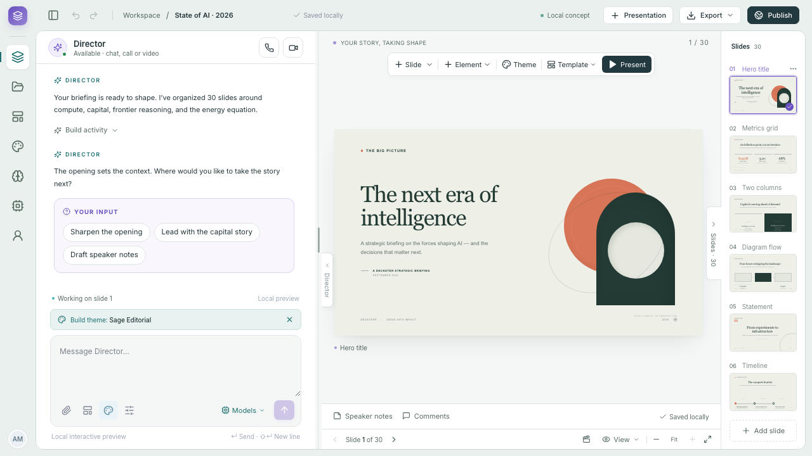
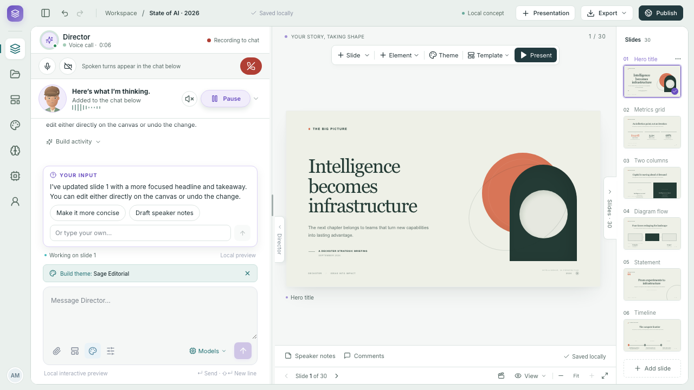
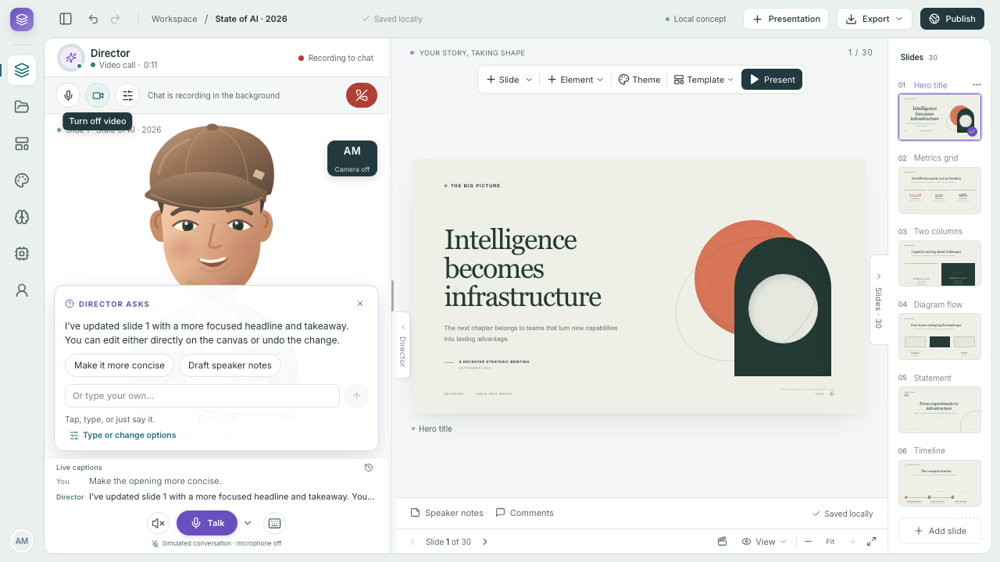
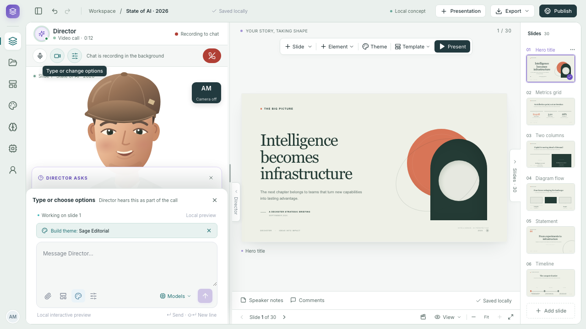
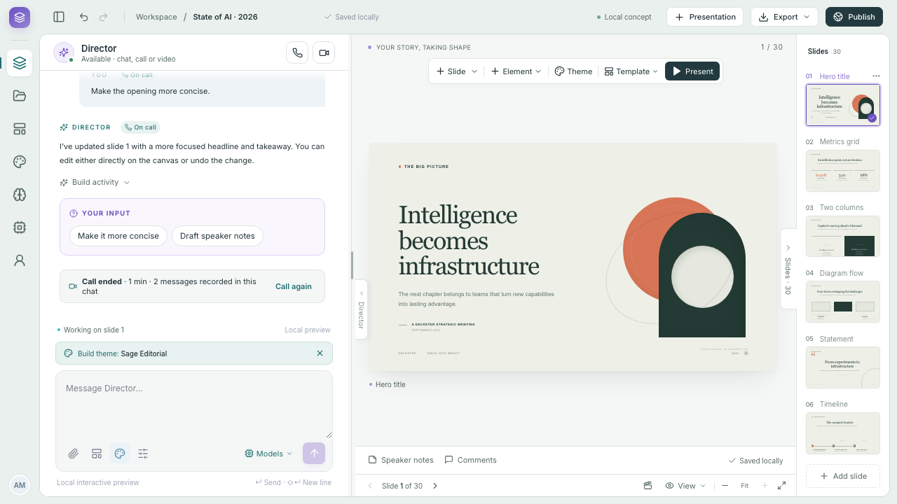
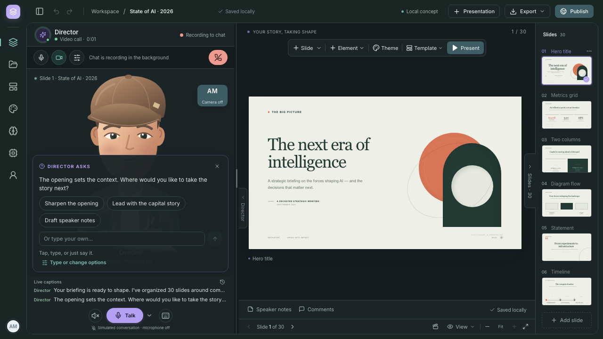
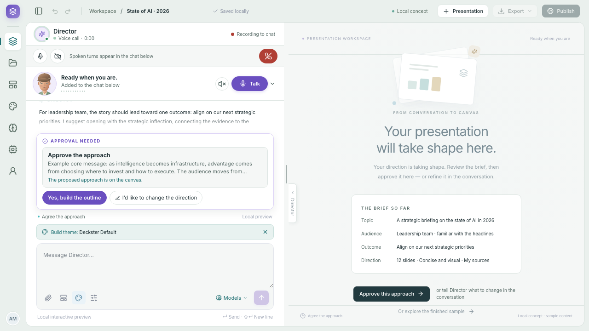
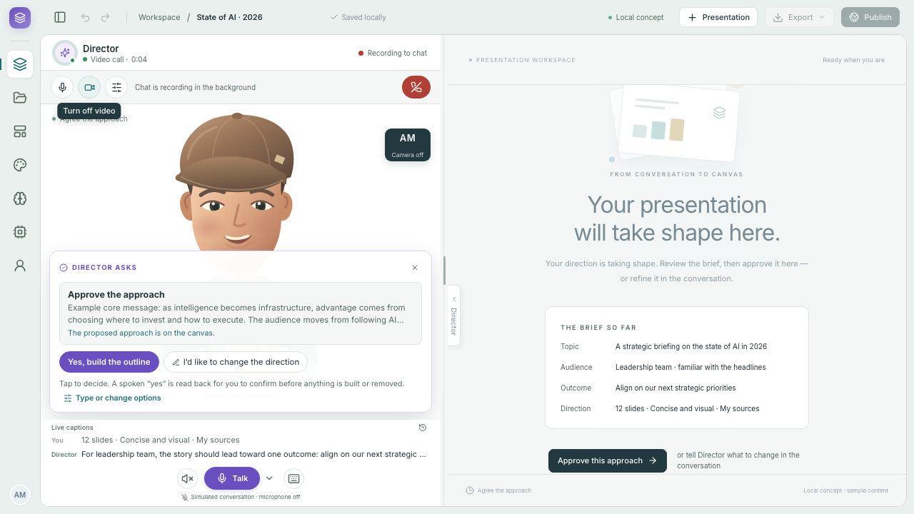
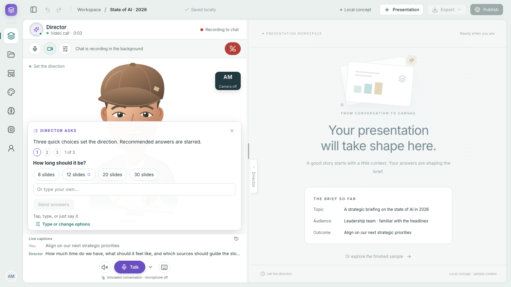

Voice & interactive avatar
Implementation brief for the Director call experience: keep the existing chat as the foundation, add voice and avatar interaction, and retain the approved Studio visual design.
Reference package · feature implementation is not yet deliveredOne conversation
Director voice, interactive avatar/video, captions and choices use the same chat and preserve its context, composer and workflows.
Off by default
Keep the addition behind a dedicated feature flag. Preserve ordinary chat and existing narration and Q&A when it is off.
Hard stop · 3 AM Eastern
Stop at 03:00 EDT on 4 October 2026. Return the patch or commit, screenshots, checks, flag instructions and any unfinished dependencies.
The screenshots below document approved mockup intent. Simulated microphone, avatar and provider states are not evidence of connected services. Use the brief for the exact implementation boundary and the reusable avatar source.
Open the current dev Studio · Development source
Wireframes and screenshots


















Files in the package
- ASSET-MANIFEST.json
- IMPLEMENTATION.md
- PASTE-TO-CLAUDE.md
- README.md
- SOURCE-MAP.md
- VISUALS.md
- reference-source/director-ask.css
- reference-source/director-ask.tsx.txt
- reference-source/director-character.css
- reference-source/director-character.tsx.txt
- reference-source/director-mode-frame.css
- reference-source/director-room.css
- reference-source/director-room.tsx.txt
- reference-source/use-director-motion.ts.txt